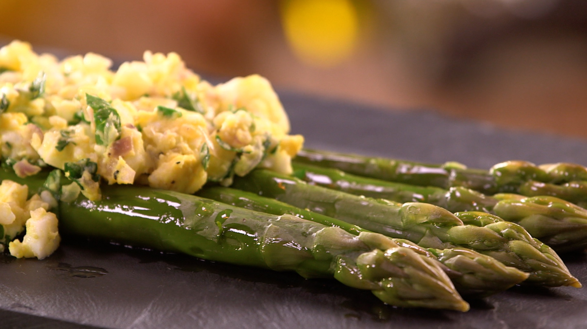

Les asperges à la Flamande

Cette recette de cuisine simple vous permettra de réaliser en quelques
étapes un plat connu de la gastronomie belge.
Et en plus, c'est de saison... À vos ustensiles !
Informations pratiques
- Temps : 40 minutes
- Nombre de personnes : 2
- Niveau de difficulté : Facile
- Coût moyen : €€
Liste des ingrédients
- 16 asperges vertes (ou une botte)
- 3 oeufs
- 50 grammes de beurre
- 50 grammes d'huile d'olive
- Persil hâché
- 1 Oignon jeune ou 1 échalotte
- Sel et poivre
Préparation
- Laver les asperges et couper les bouts durs (vous pouvez garder ceux-ci pour faire un potage)
- Plonger les asperges vertes dans l'eau bouillante et les cuire pendant 8 à 10 minutes si vous les souhaitez al dente. Laissez-les 15 minutes, si vous les désirez plus fondantes. Vous pouvez les piquer avec un couteau pour vérifier la cuisson.
- Pendant ce temps, cuire les oeufs pendant 10 minutes afin qu'ils soient durs.
- Hâchez le persil, coupez l'oignon jeune (ou la ciboulette) et faites fondre le beurre à feux doux (ou dans un bol au micro-ondes).
- Ecrasez les oeufs durs à la fourchette. Mélangez le beurre fondu avec le persil et l'oignon et assaisonnez le mélange.
- Placez les asperges sur une assiette et disposez par dessus votre préparation d'oeufs durs assaisonnés.